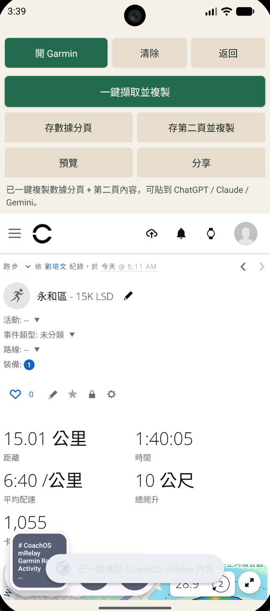
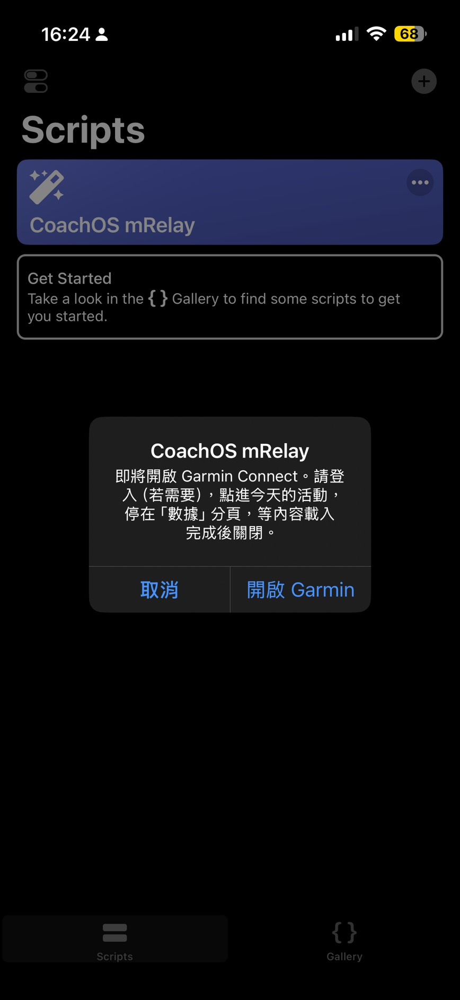
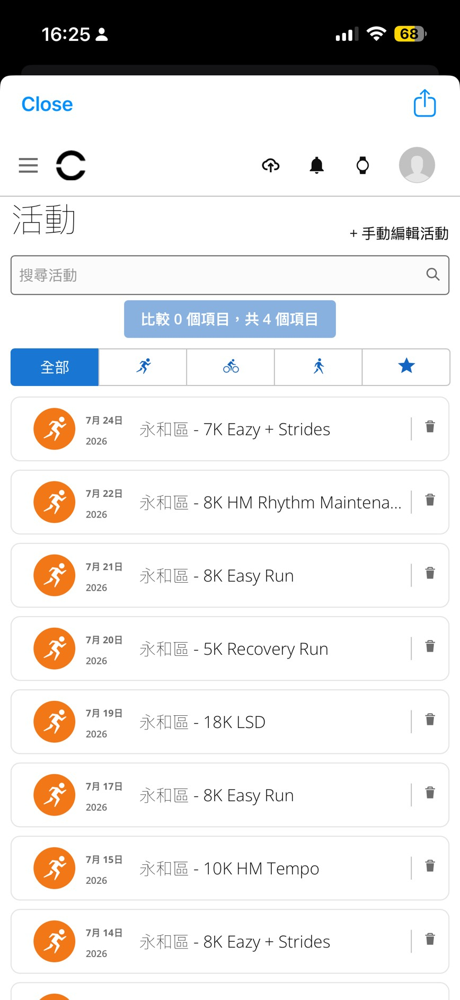
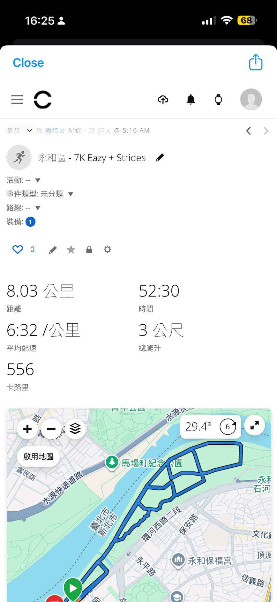
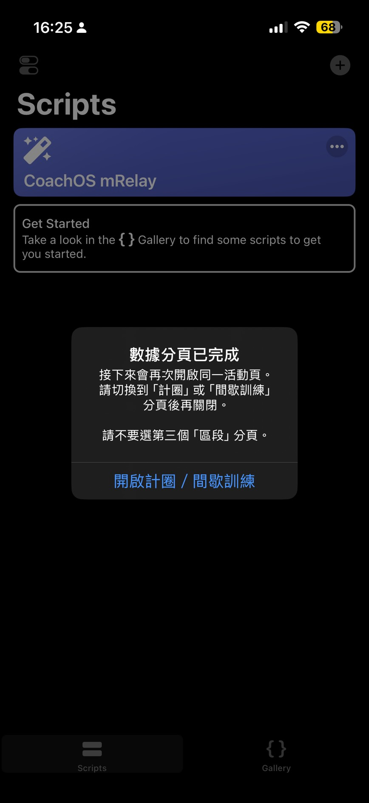
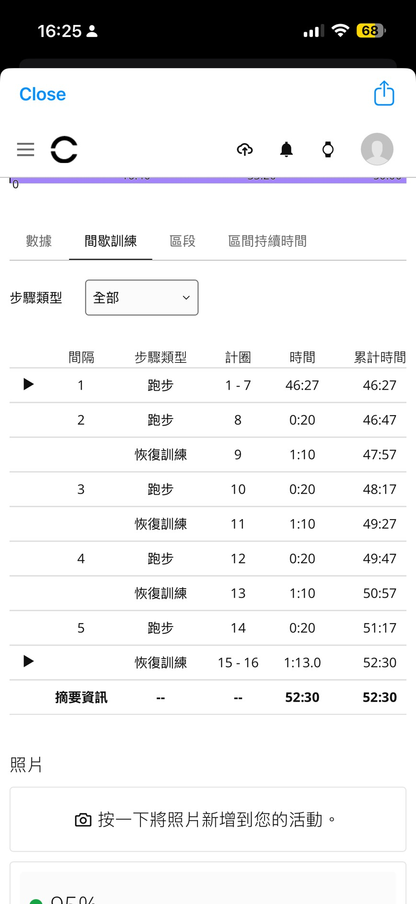
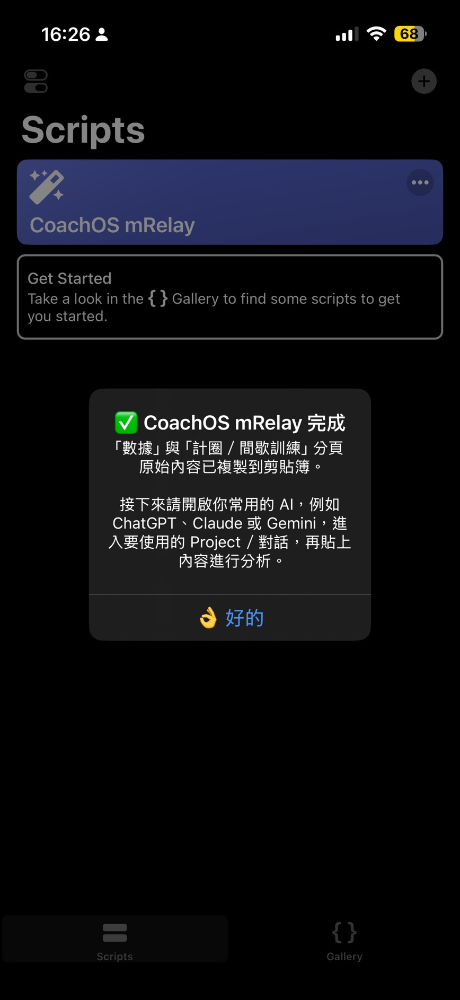

選活動
執行腳本後，程式會開啟 Garmin Connect 活動列表。登入並點進要分析的活動。
GARMIN CONNECT × AI
CoachOS mRelay 讓手機成為 Garmin Connect 與 AI 教練之間的資料接力站。iPhone／iPad 可用 Scriptable 腳本，Android 可安裝 mRelay App。
Android APK 是自行安裝版。Google Play 上架前，可先從網站下載安裝。

跑完一場，手機就是資料接力站。
HOW IT WORKS
你只需要在 Garmin Connect 裡做一次選擇，其餘由 mRelay 整理成 AI 看得懂的原始內容。
執行腳本後，程式會開啟 Garmin Connect 活動列表。登入並點進要分析的活動。
先保留「數據」分頁，再切換到「計圈」或「間歇訓練」分頁，等表格載入後關閉。
完整原始內容會自動複製到剪貼簿。開啟 ChatGPT、Claude 或 Gemini，貼上即可。
ON YOUR IPHONE
以下截圖是實際操作順序。每次關閉 Garmin WebView 前，先確認目前停在正確的分頁。






ON ANDROID
Android 版不需要 Scriptable。開啟 Garmin、點進活動後按「一鍵擷取並複製」，App 會自動取得數據分頁與間歇訓練／計圈內容。
WHY RAW DOM
Garmin Connect 是動態渲染的 SPA。mRelay 在你關閉 WebView 後讀取畫面內容，不依賴 Garmin API，也不把欄位位置寫死。
WHAT AI GETS
INSTALL ON IOS
CoachOS mRelay.js 儲存到 iCloud Drive／Scriptable。第一次使用時，請在 WebView 中登入 Garmin Connect。腳本不會把帳號密碼、Cookie 或 Token 寫入程式。
CoachOS mRelay，登入 Garmin Connect。這是自行安裝的 signed release APK，不是 Google Play 版本。安裝時 Android 可能顯示安全提示，這是側載 App 的正常流程。